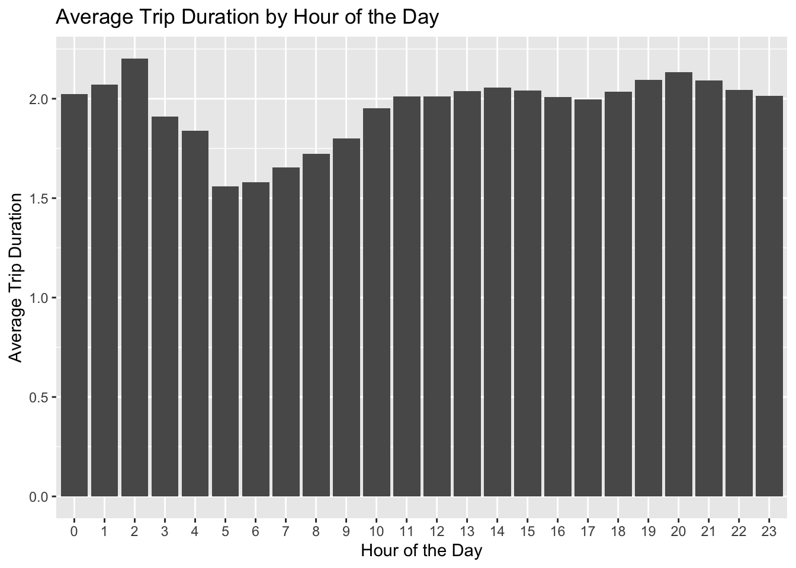
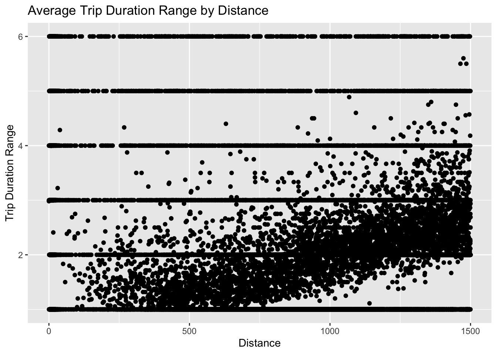
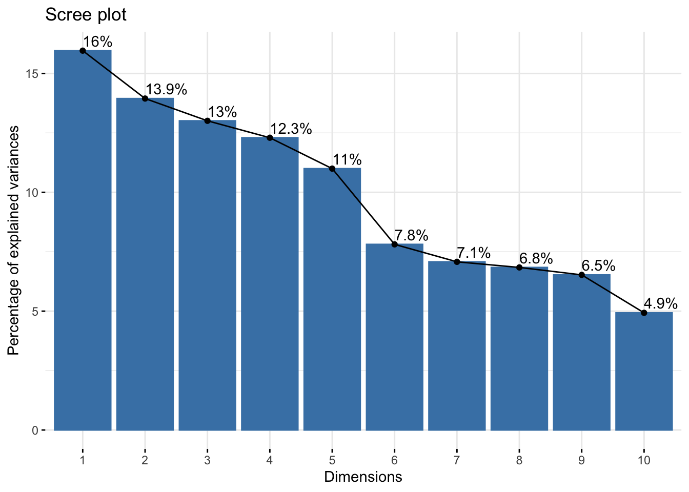
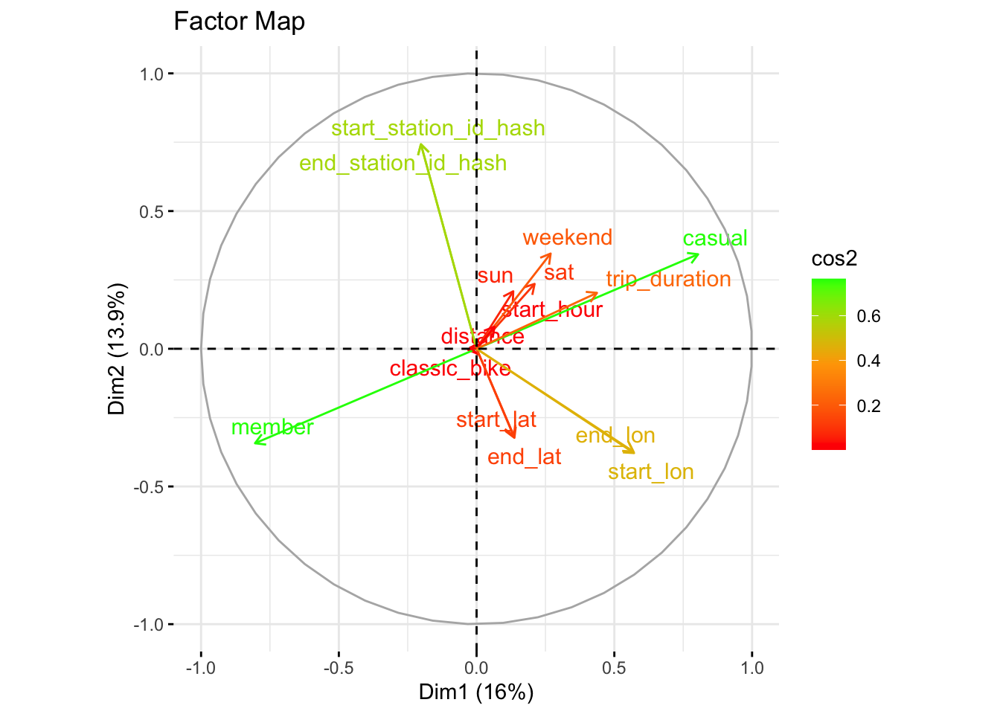
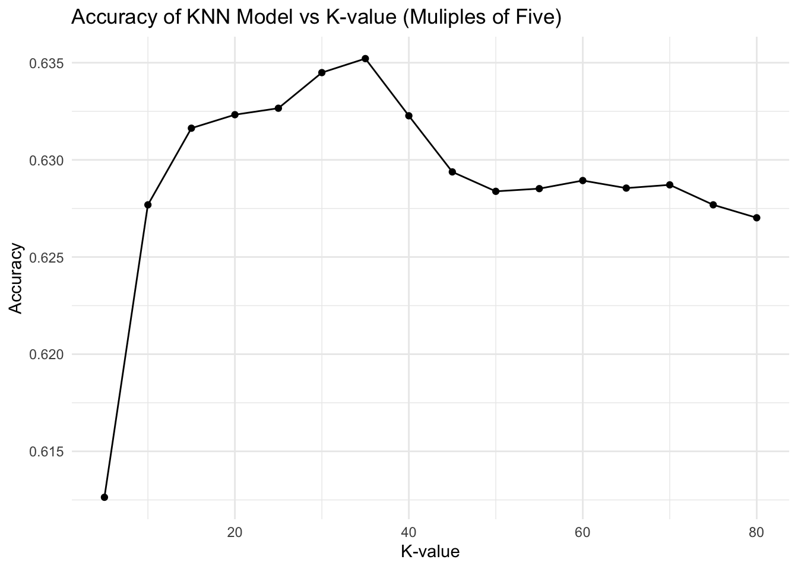
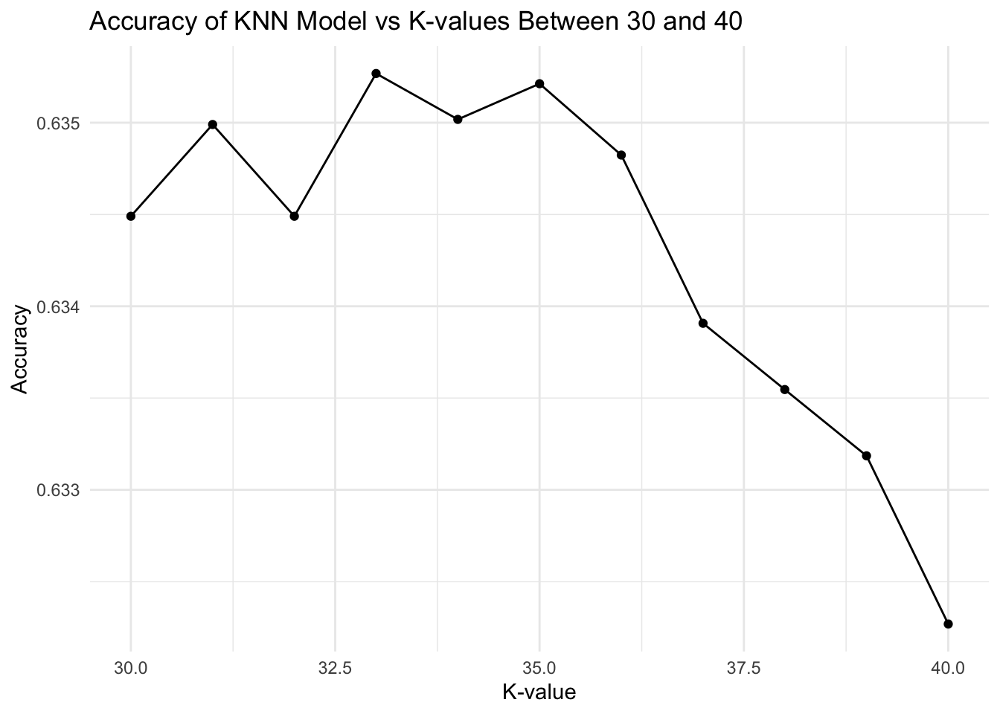

Biking in Boston: Predicting BlueBikes Trip Duration through Machine Learning
Davina Gerald Raj
Abstract
The duration of a bike trip can be influenced by many factors. Using the trips taken by users of the BlueBikes Boston system in the month of June 2024 that were 30 minutes in duration and under 1500 kilometers in distance between the starting and ending station, this study aims to identify factors that influence trip duration and utilize those factors to predict the duration of a trip through a KNN model. Through a principal component analysis and different combinations of variables, six variables were selected: status of the rider’s membership, type of bike, starting longitude, ending longitude, and distance between the starting station and ending station. The KNN model achieved the highest accuracy of 63.52% when k=33. This accuracy level suggests that important variables may have been overlooked in the creation of the variable. However, the development of this model depicts the potential for machine learning models to be utilized to attract new users and encourage environmentally-conscious practices.
Background
Transportation is crucial to many for commuting, sight-seeing, shopping, and other travel necessities. According to the United States Department of Transportation, 33% of emissions in the United States resulted from transportation in 2019 (Climate Action, 2022). In a 2024 United States Census report, it was reported that 140 million people commute to work (Census Bureau, 2024). It is not practical to reduce the number of commuters; however, encouraging alternative methods of travel that do not harm the environment is far more realistic.
Biking is an ideal method of environmentally-counsious transportation, specifically for commutes in the same city. In the greater Boston area, the bikeshare system BlueBikes (formerly Hubway) has over 3,000 bikes in 400+ stations across Boston, Brookline, Cambridge, Somerville and Everett (Bluebikes: Metro-Boston, n.d.). In 2023, there were an estimated 2.9 million trips completed by this system (Bluebikes: Metro-Boston, n.d.). Although it is a vital mode of transportation for many commuters, BlueBikes Boston does not have a feature to predict the duration of a trip. Therefore, this study aims to address this question: Which variables have the most influence on the duration of a trip and can these factors predict the duration? The initial hypothesis of this study is that the starting hour of the trip and the distance between the starting and ending locations will be the highest contributors to trip duration.
The dataset used in this study contains all of the trips through the BlueBikes system during the month of June in 2024. It was obtained through the BlueBikes website (see Code and Data Availability for more information). It contains the following information for 478,860 trips:
“ride_id” [character] - unique alphanumeric ID number of the rider
“rideable_type” [character] - classical bike or electrical bike
“started_at” [character] - start date of trip in YMD format and start time in HMS format
“ended_at” [character] - start date of trip in YMD format and start time in HMS format
“start_station_name” [character] - location name and street name
“start_station_id” [character] - unique alphanumeric ID number of the starting station
“end_station_name” [character] - location name and street name
“end_station_id” [character] - unique alphanumeric ID number of the ending station
“start_lat” [double] - starting latitude
“start_lng” [double] - starting longitude
“end_lat” [double] - ending latitude
“end_lng” [double] - ending longitude
“member_casual” [character] - member of BlueBikes or casual user of BlueBikes
Method
Data Wrangling
The dataset had the following binary columns added, with 1 representing true and 0 representing false:
“sun”: whether the ride occurred on Sunday
“sat”: whether the ride occurred on Saturday
“classic_bike”: whether the ride occurred on a classic bike
“weekend”: whether the ride occurred on the weekend (Saturday or Sunday)
“member”: whether the rider is a member
“casual”: whether the rider is not a member
The dataset had the following hashed columns added:
“start_station_id_hash”: purely numerical representation of starting stations
“end_station_id_hash”: purely numerical representation of ending stations
The data set had the following values calculated from existing columns:
“start_hour”: number 1-24 that represents the hour of the trip’s starting time
“distance”: the distance in meters between the starting coordinates and the ending coordinates
“trip_duration”: the difference in time between the starting time and the ending time, classified in ranges of five minute intervals each.
For this study, only trip durations under 30 minutes and trip distances under 1500 meters were considered.
All empty values were removed from the dataset.
Exploratory Data Analysis and Hypothesis Formation
Exploratory plots were made to test the relationship between these variables to trip time. The hour of the trip’s starting time and the distance of the trip seemed to influence the trip duration the most. This led to the hypothesis that the starting hour and distance of the trip would influence trip duration ranges the most and can be used to develop a KNN (k-nearest neighbor) model to predict the duration.
Figure 1: Average Trip Duration Range by Hour of the Day
Note. This plot shows that trips tend to be shorter from 5 AM to 8 AM compared to the rest of the day. This suggests that the starting hour of the trip has some influence over the duration of the trip.
Figure 2: Average Trip Duration Range by Distance

Note. This plot shows that trips tend to be shorter from 5 AM to 8 AM compared to the rest of the day. This suggests that the starting hour of the trip has some influence over the duration of the trip.
Principal Component Analysis and Visualizations
To test the hypothesis and identify which variables had the most influence on trip duration, a principal component analysis was conducted.
Results of Principal Component Analysis:
Importance of components:
PC1 PC2 PC3 PC4 PC5 PC6 PC7 PC8
Standard deviation 1.5473 1.4463 1.3969 1.3581 1.2843 1.0824 1.03022 1.0129
Proportion of Variance 0.1596 0.1395 0.1301 0.1230 0.1100 0.0781 0.07076 0.0684
Cumulative Proportion 0.1596 0.2991 0.4291 0.5521 0.6621 0.7402 0.81094 0.8793
PC9 PC10 PC11 PC12 PC13 PC14
Standard deviation 0.98946 0.8599 0.21410 0.21335 1.316e-12 8.191e-13
Proportion of Variance 0.06527 0.0493 0.00306 0.00303 0.000e+00 0.000e+00
Cumulative Proportion 0.94461 0.9939 0.99697 1.00000 1.000e+00 1.000e+00
PC15
Standard deviation 1.016e-13
Proportion of Variance 0.000e+00
Cumulative Proportion 1.000e+00Figure 3: Scree Plot

Note. The scree plot begins to plateau at the 6th variable. Therefore, selecting five variables for training a KNN model would be most effective.
Figure 4: Factor Map

Note. In the factor map, the arrows close to “trip_duration” represent variables that are closely related to it. For example, “casual,” “start_hour,” and “sat” are closel. In addition, the longest arrows represent variables that are highly represented in the dataset. These include “start_station_id_hash,” “end_station_id_hash,” “member,” and “casual.”
KNN Model
Using this information a KNN (k-nearest neighbor) model was developed to predict trip duration. The following variables were selected:
1) Status of the rider’s membership
2) Type of bike used
3) Starting longitude of the trip
4) Ending longitude of the trip
5) Distance between the starting station and ending station of the trip
To determine the optimal k-value, the following plots were used.
Figure 5: Accuracy of KNN Model vs K-value (Multiples of Five)

Note. This plot is used to identify the range with the highest accuracy. In this case, it is clear that k=35 results in the highest accuracy. Therefore, k-values in between 30 and 40 can be plotted next to identify the optimal k-value.
Figure 6: Accuracy of KNN Model vs K-values Between 30 and 40

Note. This plot reaches the highest accuracy at k=33.
Through these plots k=33 was selected as the optimal k-value to utilize for this model.
Results
The KNN model was trained on the status of the rider’s membership (“casual”), the type of bike used (“classic_bike”), the starting longitude of the trip (“start_lon”), the ending longitude of the trip (“end_lon”), and the distance between the starting station and ending station of the trip (“distance”) with a k-value of 33.
KNN Results:
Confusion Matrix: pred
1 2 3 4 5 6
1 10520 2808 49 15 19 66
2 3299 11891 311 15 7 21
3 757 2641 335 15 14 33
4 459 817 86 23 12 36
5 416 421 55 11 23 39
6 372 260 41 21 18 84
Accuracy: 0.635268 Discussion and Conclusion
The accuracy of 63.52% suggests that including additional variables in the machine learning model could improve effectiveness. Another possibility is that distance, starting latitude, and ending latitude should have been grouped in discrete ranges (like trip duration) rather than be considered as continuous variables. Predictions can be generalized to trips in the BlueBikes Boston system under 30 minutes in duration and below 1500 kilometers in distance.
It is also important to note that this model operates under the assumption that factors such as weather, road type, user physical ability, etc. remain consistent for all users and do not influence the trip time. However, these variables will undeniably have an effect on trip duration, which is another reason for the accuracy rate remaining below a desirable level.
This information is useful for bikeshare systems because it depicts the potential for machine learning models to be developed for the purpose of providing users with more information about their journey. This can attract more users and could increase user satisfaction with the platform. Furthermore, this model shows how machine learning can promote environmentally-aware travel.
Future areas of research include strengthening the model with different variable combinations, predicting a different variable like distance of the journey, or utilizing a different machine learning model type.
Code and Data Availability
The original dataset can be found publically on the BlueBikes website under the title “202406-bluebikes-tripdata.zip.”
Code for creating the dataset used in this study, conducting tests, and developing visualizations can be found here: https://github.com/the-codingschool/DSRP-2024-Marium/tree/d0855b4d444dc0df60419d1468b67ab872cbf848/DavinaProject
Acknowledgements
I would like to thank the following for their support:
The Data Science Research Program hosted by The Coding School with Columbia University for supporting me in learning R programming, data analysis skills, and connecting me with my mentor
Marium Tapal for serving as a mentor for the duration of this research
Renate Toldo for answering my technical questions and her encouragement throughout this process
Sarah Parker for serving as the Data Science Research Program instructor and explaining the fundamentals of R programming
I would also like to thank BlueBikes Boston for their transparency and allowing the public to access trip information.
References
Bluebikes: Metro-Boston Bikeshare Program | Bluebikes Boston. (n.d.). Bluebikes.com. https://bluebikes.com/
Census Bureau Releases New Brief About Travel to Work Since Pandemic’s Onset. (2024, February 20). Census.gov. https://www.census.gov/newsroom/press-releases/2024/travel-to-work-since-pandemic.html#:~:text=Almost%20140%20million%20people%20in
Climate Action | US Department of Transportation. (2022, July 29). U.S. Department of Transportation. https://www.transportation.gov/priorities/climate-and-sustainability/climate-action